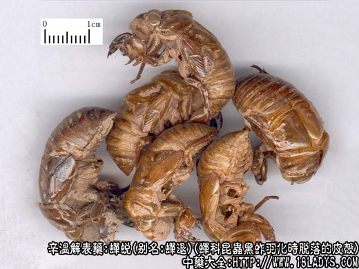

本品为常用中药。始载于《名医别录》。
别名：蝉退、知了皮、虫退、仙人衣（北京）。
来源：蝉科昆虫黑蚱羽化时脱落的皮壳。
产地：主产于山东、河北、河南，其他各地亦产。
性状鉴别：全形似蝉无翅而中空。黄棕色，半透明，有光泽。膜质易碎。气味微淡以完整、黄亮、无泥土者为佳。
主要成分：为甲壳质。含氮7.86%，灰分14.57%。
药理作用：解热、镇静、镇痉。动物实验初步证明了蝉蜕具有神经节阻断作用和镇静作用。
性味：甘寒。
归经：入肺、肝经。
功能：散风热、退目翳，透气，解痉。
主治：感冒分热、音哑，麻疹不透，风疹作痒，小儿惊痫。
临床应用：一般用于小儿科较多，内科杂病和眼科也经常使用。
1、治疗肺热嘶哑（急性喉炎、急性支气管炎），配牛蒡子、生甘草等，如单纯外感风热所致的嘶哑，则配胖大海。
3、治疗小儿夜啼。用薄荷汤调服蝉蜕的下半截（即去头足）7～9个。
4、眼科方面，主要用于退翳（包括炎症性或外伤性角膜损害遗留的云翳、斑翳、白斑），古方即已用蝉蜕无比散治白翳遮睛，现代实践用蝉蜕无比散加减全蝎或蜈蚣、凤凰衣、犀角等治疗角膜白斑，根据对一些病例的初步观察，确有一定疗效，能提高视力。此外，蝉蜕配木贼、菊花等能清风热，治眼红肿痛（急性结膜炎等）。
5、用于熄风定惊（如治破伤风）。单用效力不大，须配镇痉全蝎、僵蚕等，方如五虎追风汤。
6、最近有人试用蝉蜕于慢性肾炎中去尿蛋白，须配苏叶、益母草等，初步观察有一定疗效。处方：蝉蜕25g、布渣叶30g、苏叶15g、益母草30g、尖槟15g，水煎服。
用量：常用量：3～15g，治慢性肾炎、破伤风，须用大量，甚至达15～30g。
处方举例：1、蝉蜕无比散《银海精微》：蝉蜕（去头足）3g、蛇蜕3g、白蒺藜12g、石决明15g、防风9g、苍术6g、当归6g、川芎3g、赤芍9g、炙甘草3g，水煎服。
2、五虎追风汤：蝉蜕30g、制南星6g、明天麻6g、全蝎（连尾）7个、僵蚕（炒）7个水煎，每日一剂，连服三日。
注：浙江尚产一种金蝉衣，系山蝉羽化后，脱落的皮壳，体较瘦小，长约3厘米。色金黄透红光，尾尖，腹部环节单线。此商品大部分出口。